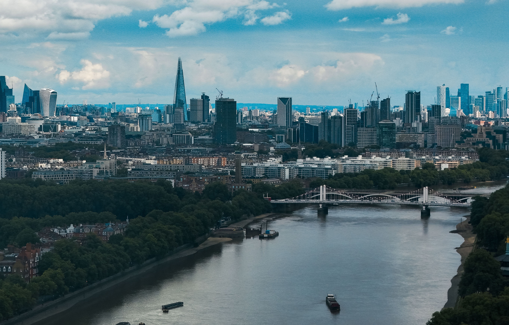

Geography


The city is located in the southeast part of England. The city sits on the River Thames which flows into the English Channel connecting the city with the open sea.
The city has a moderate climate, so you'll never get bone chilling winters or scorching heat, however as any resident of the city can tell you the torrential rains are long lasting and constant leaving streets waterlogged and the many beautiful parks unusable but this only a temporary measure. During a sunny day London is one of the most beautiful cities on earth.